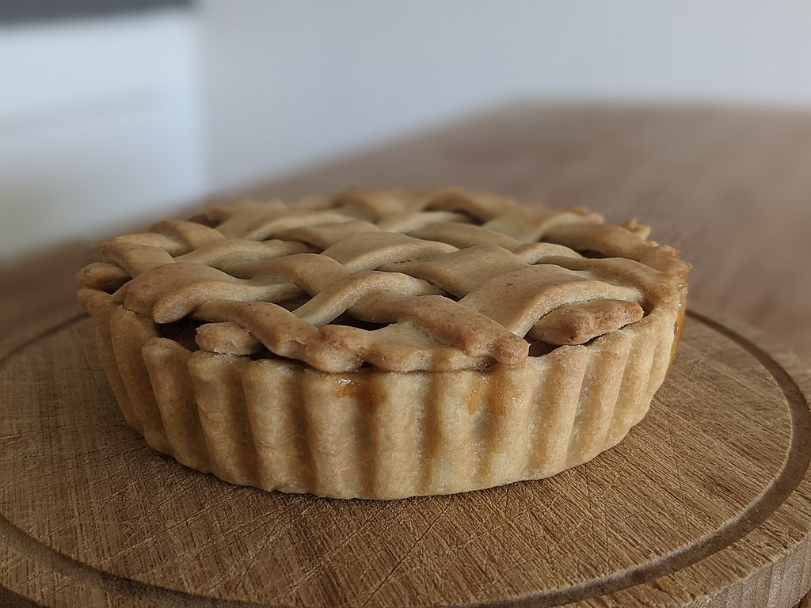

Apple Pie

Description
An apple pie is a pie in which the principal filling ingredient is apples. The earliest printed recipe is from England. Apple pie is often served with whipped cream, ice cream ("apple pie à la mode"), or cheddar cheese.[3] It is generally double-crusted, with pastry both above and below the filling; the upper crust may be solid or latticed (woven of crosswise strips). The bottom crust may be baked separately ("blind") to prevent it from getting soggy. Deep-dish apple pie often has a top crust only. Tarte Tatin is baked with the crust on top, but served with it on the bottom.
Ingredients:
- ¾ cup white sugar
- 2 tablespoons all-purpose flour
- ½ teaspoon ground cinnamon
- ¼ teaspoon ground nutmeg
- ½ teaspoon lemon zest
- ½ teaspoon lemon zest
- 2 teaspoons lemon juice
]
- 1 tablespoon butter
- 1 recipe pastry for a 9 inch double crust pie
- 4 tablespoons milk (Optional)
Steps:
-
Preheat oven to 425 degrees F (220 degrees C).
-
Mix together the sugar, flour, cinnamon, nutmeg and lemon peel.
-
Line one crust in a 9-inch deep-dish pie pan. Layer 1/3 of apples into pie crust. Sprinkle with sugar mixture and repeat until done. Sprinkle with lemon juice and dot with butter.
-
Place second pie crust on top of filling and flute the edges. Cut vents in top crust and brush with milk for a glazed appearance if desired.
-
Bake at 425 degrees F (220 degrees C) for 40 to 50 minutes.